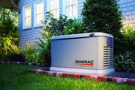
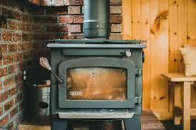
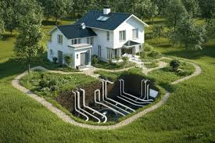

Utilities & Needs
People have different definitions of what needs are. None the less being off grid doesn't mean you you have to sacrifice your wants and needs.
Solar Panels
The Why: Reliability and low maintenance. Unlike anything with moving parts, solar panels just sit there. They are the most predictable way to get a trickle of power throughout the day.
The How: Photovoltaic (PV) cells convert photons into DC electricity. To make this useful, you need a Charge Controller to prevent overcharging and an Inverter to turn that DC into 120V AC for your appliances.

Wind Turbines
The Why: Nighttime and winter power. Solar stops at 5:00 PM; wind doesn't. It’s the perfect backup to solar because wind is often strongest when the sun isn't shining.
The How: Wind spins blades that turn an alternator. The biggest mechanical challenge is the Braking System, if the wind gets too high, the turbine can literally spin itself into pieces unless it has a way to turn away or electronically brake.

Micro-Hydro
The Why: The "Holy Grail" of off-grid power. If you have a stream with enough head, you get 24/7 power regardless of the weather.
The How: Water is piped down a hill into a narrow nozzle that hits a Pelton wheel. This spins an alternator constantly. It’s high-efficiency but requires constant clearing of leaves and debris from the intake.

Power Storage
The Why: Bridging the gap. You generate power during the day, but you use it at night. Without storage, your solar panels are useless as soon as a cloud passes by.
The How: Most modern setups use Lithium Iron Phosphate (LiFePO4). They store energy chemically. The "how" is all about the Battery managment system, which balances the cells so they don't catch fire or die prematurely.

Generators
The Why: The safety net. When you have three days of rain and your batteries hit 20%, a generator is the only thing that saves your food from spoiling.
The How: An internal combustion engine spins an onboard alternator. For off-grid use, you want an Inverter Generator because it produces clean power that won't fry sensitive electronics.

Woodstoves
The Why: Total independence. If the sun doesn't shine and the gas runs out, you can always find wood. It provides a dry, intense heat that helps prevent mold in off-grid homes.
The How: It uses Convection. Air is pulled into the firebox, heated, and circulated. Modern secondary combustion stoves actually burn the smoke itself, making them way more efficient and reducing the creosote buildup in your chimney.

Geothermal
The Why: Stability. The ground 6-10 feet down is always around 55° degree. You use the earth as a heat sink to stay cool in summer and a heat source in winter.
The How: You bury long loops of pipe. A fan or pump moves air/liquid through the pipes, pre-warming or pre-cooling it before it ever hits your house.

Rainwater Harvesting
The Why: It’s free water that doesn't require a $15,000 drill rig. It’s usually softer than well water, which is better for your plumbing.
The How: Gutters collect water and send it through a First Flush Diverter. It’s stored in a cistern and then passed through a UV filter or 5-micron sediment filter before you drink it.

Deep Wells
The Why: Consistency. Rain stops during droughts, but a deep aquifer is a massive, reliable reservoir.
The How: A drill rig hits the water table, and a Submersible Pump is lowered hundreds of feet down. Since these pumps pull a lot of surge power, you usually need a dedicated soft start inverter to run them off solar.

Composting Toilets
The Why: Water conservation. Standard toilets use about 30% of a home's water. A composting toilet uses zero, which is huge when you're hauling or pumping every gallon yourself.
The How: It relies on Source Separation. You keep liquids and solids separate. The solids are mixed with carbon and broken down by aerobic bacteria. If you keep them separate, there’s actually no smell.

Septic Systems
The Why: Convenience and normalcy. It allows you to use standard flush toilets and drains just like a city house, keeping waste safely underground.
The How: Waste goes into a Septic Tank where solids settle to the bottom. The greywater flows out into a Leach Field, where the soil naturally filters out the bacteria before it reaches the groundwater.